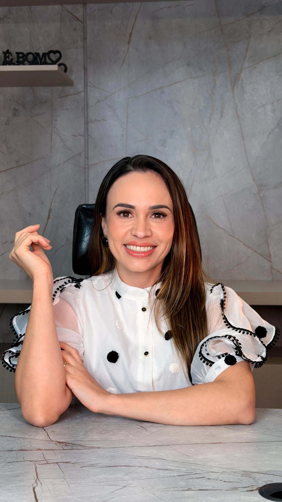

Foco principal
Saúde intestinal
Atenção aos desconfortos digestivos, distensão abdominal e alterações do funcionamento intestinal.
Saúde intestinal, lipedema e equilíbrio do organismo com investigação cuidadosa, conhecimento científico e um plano feito para a sua realidade.
Primeira consulta de aproximadamente 1h30
Planejamento pensado para sua realidade
Recursos como Dietobox e WhatsApp
Uma abordagem personalizada para compreender as necessidades do seu corpo e encontrar estratégias nutricionais que façam sentido para você.
Atenção aos desconfortos digestivos, distensão abdominal e alterações do funcionamento intestinal.
Estratégias nutricionais individualizadas como parte de um cuidado integral e interdisciplinar.
Orientação alimentar criteriosa, a partir da avaliação dos sintomas e do histórico individual.
Acompanhamento nutricional personalizado, integrado ao cuidado e à avaliação médica.
Escolhas alimentares adaptadas ao seu organismo, às necessidades e à rotina.
Cuidado nutricional em diferentes fases da vida adulta, incluindo a gestação.
A orientação nutricional integra o cuidado em saúde e não substitui avaliação, diagnóstico ou tratamento médico quando necessários.

anos dedicados
à nutrição
Acredito que a nutrição precisa fazer sentido na vida real.
Sou Alline Silvestre, nutricionista funcional com 12 anos de experiência. Meu trabalho se concentra especialmente na saúde intestinal, no lipedema e em questões relacionadas à inflamação, intolerância à histamina e ativação mastocitária.
Tenho pós-graduações em Nutrição Clínica, Fitoterapia, Nutrição Esportiva, Funcional e Ortomolecular. Uno atualização profissional, investigação cuidadosa e orientações construídas de forma individualizada.
Sem fórmulas prontas. Cada etapa parte da sua história, dos seus sintomas e do que é possível na sua rotina.
Investigação aprofundada de sinais, sintomas, hábitos e histórico de saúde.
Conduta nutricional e plano alimentar elaborados na consulta, pensando no seu cotidiano.
Contato via WhatsApp e recursos como Dietobox, conforme as condições do atendimento.
Atendimento individualizado, presencialmente na Clínica Magnem ou online.
Um encontro completo para investigar suas necessidades e definir seus próximos passos.
Valores e condições de pagamento são informados pela equipe pelo WhatsApp.
Para quem deseja dar continuidade ao cuidado nutricional de forma planejada.
Consulte a equipe pelo WhatsApp para conhecer as condições e opções de pagamento.
Algumas respostas para você se sentir mais segura antes de agendar sua consulta.
Ainda tem uma dúvida?Ela dura aproximadamente 1h30. A Alline investiga sintomas, histórico e hábitos, define a conduta nutricional e elabora o plano alimentar durante a consulta.
Sim. Há atendimento online e presencial na Clínica Magnem, em Umuarama (PR).
Não existe uma consulta de retorno específica. As consultas seguintes têm duração aproximada de uma hora e são agendadas conforme a necessidade.
O pacote oferece acompanhamento ao longo de três meses. Quantidade de consultas, condições e serviços incluídos devem ser confirmados diretamente com a clínica antes da contratação.
A Clínica Magnem dispõe de bioimpedância InBody 120, quando indicada no atendimento presencial. A equipe confirma os detalhes no agendamento.
A equipe informa pelo WhatsApp as condições de reserva, as opções de pagamento e as regras de reagendamento antes da confirmação da consulta.
O atendimento é voltado a adultos, incluindo gestantes. A profissional informou que não atende crianças, pacientes oncológicos ou casos que demandem cuidado nutricional específico para doença renal.
Atendimento acolhedor e personalizado, com tempo para ouvir suas necessidades.
Falar com a Alline pelo WhatsAppATENDIMENTO PRESENCIALClínica MagnemRua Piauí, 3377 · Zona 02
Umuarama, ParanáComo chegar
HORÁRIO DE ATENDIMENTOSegunda a sexta, à tardeConsultas presenciais e online
AGENDAMENTO(44) 99741-9269Enviar mensagem